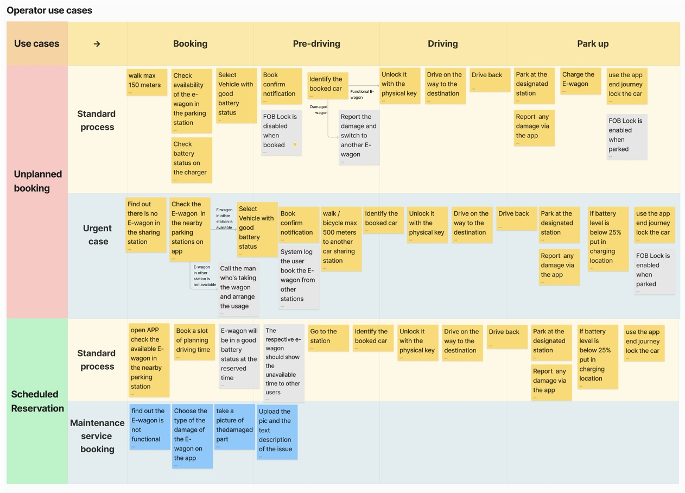
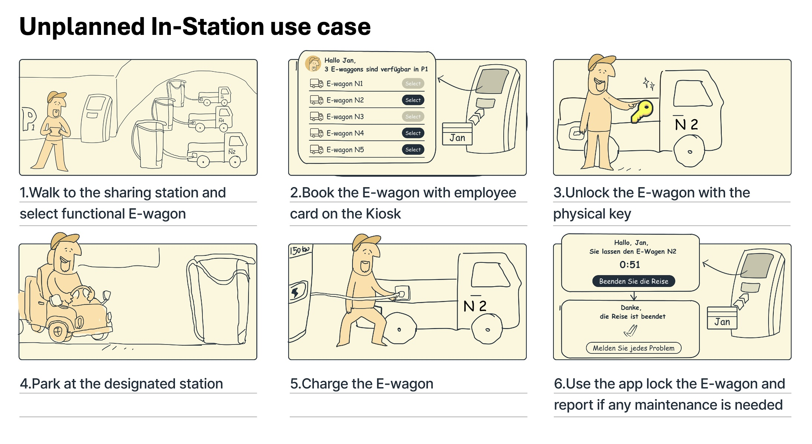
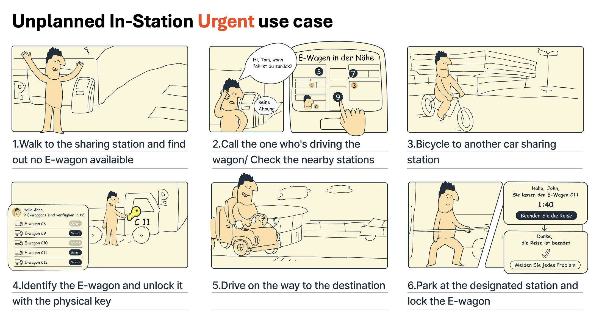

Academic Co-Creation · Field Research · Service Design · 2024 · Mercedes-Benz × KIT
Ideation of e-Wagen simplification @ Mercedes-Benz plant Sindelfingen
An interdisciplinary academic sprint with KIT and Mercedes-Benz Sindelfingen to redesign shared electric vehicle operations — from ethnographic shop-floor research to a deployable pooling framework with measurable fleet and operational efficiency gains.
The problem
A fleet of electric wagons — unevenly distributed, invisibly managed, operationally wasteful
At the Mercedes-Benz Sindelfingen plant — one of Europe's largest automotive production facilities — workers rely on electric wagons for short-distance transport between stations, buildings, and logistics zones. The fleet operated with no coordination layer: vehicles accumulated in high-traffic areas while adjacent zones went without, redistribution was informal, and there was no real-time visibility into location or availability.
Workers lost productive time searching for wagons; supervisors had no data for rebalancing decisions; and the plant was likely overinvesting in fleet size to compensate for poor distribution — a classic symptom of low asset utilisation, not insufficient capacity. KIT IPEK and Mercedes-Benz commissioned an interdisciplinary sprint to design a pooled sharing system implementable within existing infrastructure.

An electric wagon at the Mercedes-Benz Sindelfingen plant — the vehicle at the centre of the sharing system redesign.
"Most movement needs are short-notice and unplanned — workers walk over and take a wagon when the task arises. Any system requiring advance booking will be abandoned within a week."
Research approach
Interdisciplinary field research before any solution is proposed
Tarik (KIT Carl Benz School, mechanical engineering) grounded the work in vehicle constraints, load dynamics, and infrastructure feasibility; I led user research, service design, and workflow analysis. Both lenses were necessary — fleet problems at this scale require the physical system logic and the behavioural reality of the people using it.
Ethnographic worker interviews
In-depth interviews with technicians, logistics staff, and supervisors at Sindelfingen. Key findings: demand is spontaneous, urgency varies significantly by role, and workers have low tolerance for access friction.
User typology and persona development
Interview data synthesised into four user profiles distinguished by movement frequency, task urgency, and relationship to the wagon system — the design anchor for all subsequent decisions.
End-to-end lifecycle mapping
Mapped the full sharing lifecycle — need identification → pickup → use → return → rebalancing → charging — revealing the precise failure points where structural changes would have the greatest leverage.
Cross-functional validation workshops
Working sessions with Mercedes-Benz operations managers, KIT engineers, and logistics planners to validate findings and align on core sharing logic. Engineering feasibility and user acceptability were stress-tested in parallel.

Four user personas derived from field interviews — each profile distinguished by movement frequency, urgency level, and sharing system expectations.
Key design decision
Rejecting app-based booking in favour of station-based walk-up access
The initial hypothesis was a mobile booking interface — workers reserve a wagon in advance, collect it at a designated time. Two independent constraints eliminated it: field research had established that wagon use is spontaneous, not planned, making a reservation system structurally incompatible with the workflow. And GDPR prohibits personal devices for employer-managed operations, requiring company-issued devices for all plant staff — disproportionate cost for this problem.
GDPR compliance constraint
German data protection law prohibits personal devices for employer-managed operations without company-managed device policies. An app-based system would require issuing dedicated devices to all relevant plant workers — capital and administrative cost disproportionate to the problem being solved.
The team converged on a station-based pooling model: fixed pickup and drop-off points distributed across the plant. Workers walk to the nearest station, take a wagon, and return it to any station when done. No app, no booking, no personal device required.

Before/after: decentralised departmental ownership with individual key access (left) vs. station-based shared pool with kiosk access and centralised data management (right).
Service flows designed
Two access tiers within a single system
Before touching any screen, I mapped every operator scenario across the trip lifecycle: booking, pre-driving, driving, and park-up. The map covers unplanned and scheduled use plus the maintenance reporting path, which made the failure points and the access tiers obvious.

The operator use-case map. Each row is a scenario (unplanned standard, unplanned urgent, scheduled, maintenance) traced across the four trip phases. The two unplanned in-station flows became the core of the deployed system.
Walk-up access
Worker walks to the nearest station, collects an available wagon without pre-registration, and returns it to any station when done. Inventory updates automatically, feeding the rebalancing model.
Time-critical access
Escalation path for production-critical tasks when a local station is depleted. The system triggers passive redistribution from adjacent stations — no manual supervisor intervention required.

Standard walk-up flow. Jan walks to the station, books a functional E-wagon at the kiosk with his employee card, unlocks it with the physical key, drives, parks, charges, and ends the trip in the app.

Time-critical flow. When the home station is empty, the worker calls the current driver or checks nearby stations, bicycles to the next one, takes an available E-wagon, and completes the trip there.
Five hardware and software components work in concert at each station.
01Station kiosk
▾
The single physical interface workers touch — ID card scan identifies the user, displays available wagons, releases the physical key on pickup, and logs the trip on return.
02Employee ID card
▾
Walk up and tap — no app, no PIN. Usage is attributed to department rather than individual, keeping the system GDPR-compliant without personal data collection.
03Electronic Keyhole Blocker (EKB)
▾
Fitted to each wagon, the EKB enables or disables the physical ignition key via the station system. A CAN bus connector reads battery status — no app or network access required on the vehicle side.
04In-station charger
▾
One charger per slot. Charging begins automatically on return and reports status to the backend, keeping the fleet ready without manual checks.
05Backend data management
▾
Aggregates real-time station utilisation, peak demand by time and zone, and trip duration — feeding directly into the plant's maintenance information system for condition-based scheduling.
Operational impact · POM perspective
Fleet pooling as an operations management lever
The shift from siloed wagon ownership to shared pooling is an operations management intervention, not just a UX change. The pooling effect — a corollary of inventory theory — holds that consolidating independent demand streams into a shared pool reduces required safety stock while maintaining the same service level. Under the fragmented model, each zone held its own idle buffer. A shared pool collapses these into a single demand distribution with lower variance, enabling equal availability with a smaller fleet.
Fleet size reduction
The pooling effect enables 20–35% fleet reductions in comparable facility deployments. For an industrial e-wagon at €15,000–25,000 per unit, even a modest reduction means significant capital recovery and lower depreciation.
Asset utilisation improvement
Fragmented fleets typically run below 50% utilisation — wagons are unavailable due to mislocation, not shortage. Real-time station inventory directly attacks idle time, improving return on the existing fleet before any new capital is deployed.
Elimination of non-value-adding search time
Time spent locating a wagon is muda — it does not advance throughput. Predictable walk-up availability eliminates search time as a recurring cost, with multiplicative effect across hundreds of workers per shift.
Condition-based maintenance scheduling
Station telemetry provides per-vehicle usage data for the first time — enabling condition-based rather than time-based maintenance. This reduces unplanned downtime and unnecessary preventive cost, extending fleet lifecycle.
Outcome
Key benefits of our proposal
The station-based model won approval on four fronts, one for each stakeholder who has to live with the system.
Minimized initial investment
ManagementIt runs on what the plant already has: the kiosk, employee ID cards, and the wagon's physical key. No worker-facing app, no dedicated devices to issue, no fleet replacement.
Simple and quick implementation
Operation & MaintenanceThe hardware is off-the-shelf. The EKB blocks the key and reads battery over CAN bus, and the charger reports status on its own. No vehicle connectivity to provision, so stations go live one at a time.
Usage pattern consistent with existing workflow
High demand operatorWalk up, take a wagon, return it to any station. No booking, no reservation, no waiting. It mirrors how workers already grab a wagon, so adoption asks for no new habit.
More utilization, same fleet
All the operatorsPooling collapses each zone's idle buffer into one shared supply. The same fleet covers more demand, and real-time station inventory ends the time lost hunting for a free wagon.